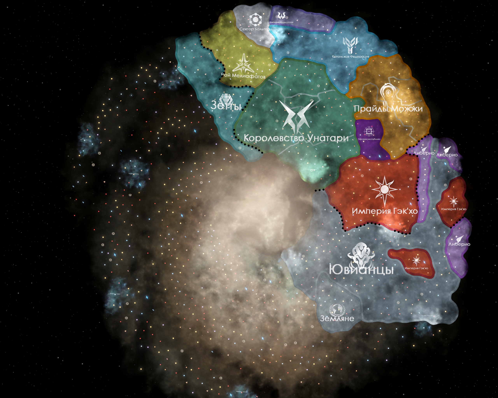
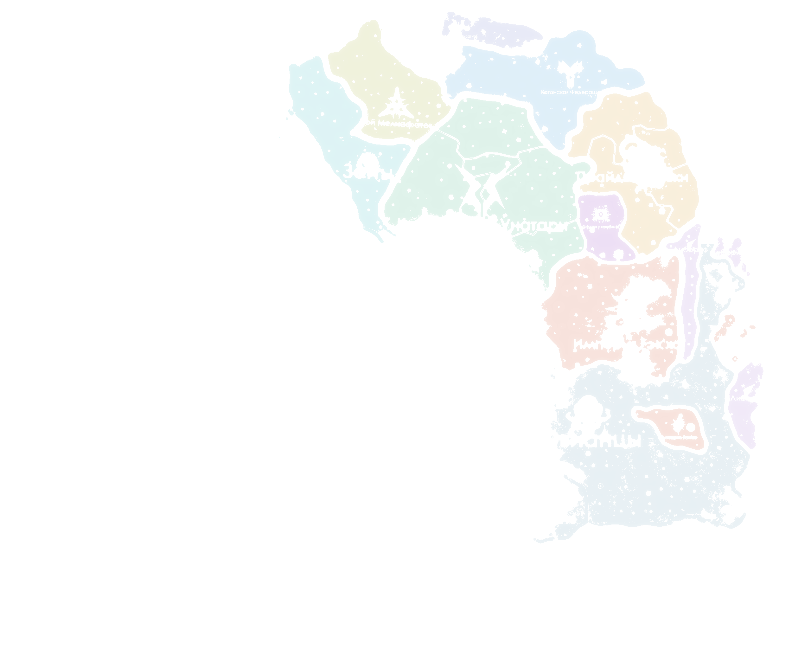

НЕИЗВЕДАННОЕ ПРОСТРАНСТВОЗа пределами доступных карт
НЕИЗВЕДАННОЕ
ПРОСТРАНСТВОНет картографических данных
ПРОСТРАНСТВОНет картографических данных
НЕИЗВЕДАННОЕ
ПРОСТРАНСТВОНет картографических данных
ПРОСТРАНСТВОНет картографических данных
НЕИЗВЕДАННОЕ ПРОСТРАНСТВОЗа пределами доступных карт
ГАЛАКТИЧЕСКАЯ ОБЛАСТЬ
Известная Галактика


МАСШТАБ ВСЕЛЕННОЙ
СЛОИ ГОЛОКАРТЫ
Подсветка цветных областей исходной карты.